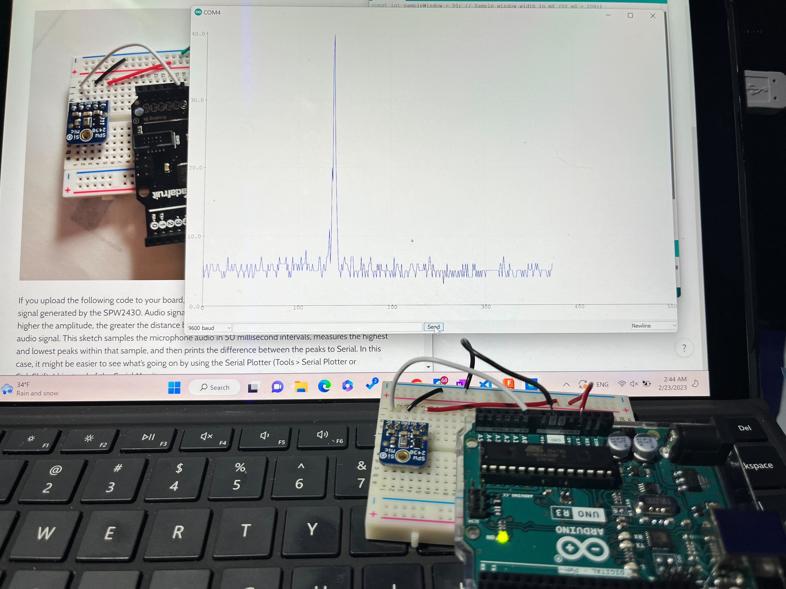

Week 4
The Power of Circuitry: Microcontroller Programming
Topics Covered:
- How To
- Arduino
- Circuitry
- More Circuitry
- Explorations
- Arduino Boarding
The assignment: Program an Arduino board to do something. The examples in the Arduino Projects Book provide good starting points. You may also wish to use this assignment to build on the previous assignment.
- Include code snippets in your documentation.
- Draw a schematic of your circuit. Use a hand sketch, Flastad, Fusion 360 (Eagle), or other.
- Bring your project to class Thursday and be ready to do a brief live demo.
Reaching Understanding
The circuitry and microcontroller programming aspect of this course has been completelyBoggling me,
especially because I wasn't able to make all of lab, in which we covered Arduino programming.
To amend this, I decided to read all of the Arduino Foundations pages, and really take the time to understand how an Arduino board and program works. You can find my notes on Notion here.
Well, I am so glad I spent that time.
It quickly became apparent how much easier it is to use Arduino to create circuits is when you understand the hardware and software. Again, my Notion notes are here, but here are some of the main takeaways which I maybe embarrassingly didn't understand before:
- Arduino has analog pins and digital pins. Analog signals are bound to a range, while digital signals provide one of two binary states (0 or 1, LOW or HIGH).
- You define analog and/or digital pins as inputs or outputs.
- Those that receive inputs are connected to sensors, which record some physical parameter in the environment and convert it to an electronic signal. Perhaps surprisingly, analog sensors are simpler, just feeding the pin some value within a 10-bit resolution range 0-1023. Digital sensors rely on Serial Communication Protocols to utilize binary code for transmitting data.
-
Those pins that are defined as outputs connect to actuators, which instead convert
electronic signals into some energy output in the environment, like mechanical energy that
moves a motor or radiant energy that turns on an LED pin.
Both digitally and analog-ally(?) controlling the actuator is relatively simple, as you can see below:
digitalWrite(LED, HIGH); //turn on an LED digitalWrite(LED, LOW); //turn off an LED analogWrite(motor, 255); //set a motor to maximum capacity analogWrite(motor, 25); //set a motor to 10% of its capacity
- Finally, I understand the Arduino IDE structure a little better.
Where to define local and global variables (inside the loop function, at the top of the sketch),
how to use
millis()instead ofdelay()for making events happen simultaneously, and how to use Serial Communication as well as configure or write to my Arduino pins.
Initial Exploration
First thing I did was try to use one of the MEM MICS in the drawer to see if I could monitor sound.
I found the Adafruit MEMS Microphone Breakout SPW2430, which I originally struggled with finding a tutorial
before Isa pointed me towards the very helpful and straightforward Week 6 tutorial!
Below, you can see the Serial Plotter indicating higher input when I snap my fingers or make other sounds!

I also tried the introductory circuits in the Arduino Projects Book, in which you use a push-button to complete a circuit that lights up an LED.
Controlling the Speed of the Motor
What I wanted to do was use buttons as "decrease speed" and "increase speed" buttons
for my motorized project from last week (jumping dolphins). I was also hoping to incorporate sound
by